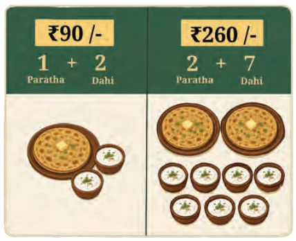

Think and Reflect
The cost of one paratha and 2 bowls of dahi is ₹90. Also, the cost of 2 parathas and 7 bowls of dahi is ₹260. Can you figure out the cost of one paratha and one bowl of dahi and explain your reasoning?
Do you remember Rakesh’s puzzle from Grade 7? “I have thought of two numbers”, he said. “Their sum is 25 and their difference is 11”. We solved the problem by making a table and listing possible combinations. We can also solve this using a pair of linear equations.
| First Number | Second Number | Sum | Difference |
|---|---|---|---|
| 10 | 15 | 25 | −5 |
| 20 | 5 | 25 | 15 |
| 18 | 7 | 25 | 11 |
If the two numbers are \(x\) and \(y\), we get the equations
\(x + y = 25\) and \(x - y = 11\).
Such problems lead to a pair of linear equations in two variables. A solution to such a pair of equations is an ordered pair \((a, b)\) that satisfies both equations. How do we find a solution? We shall soon see.
Consider another situation. A science exhibition charges an entry fee that is different for adults and children. Here are the amount paid by two different groups.
Group A: 2 adult tickets and 3 child tickets for ₹600
Group B: 3 adult tickets and 2 child tickets for ₹700
How much do individual adult and child tickets cost?
If the cost of one adult ticket is ₹\(x\) and one child ticket is ₹\(y\), then:
\(2x + 3y = 600, \quad 3x + 2y = 700.\)
This gives us another pair of linear equations in two variables. A solution to these equations will give us the answer that we seek. Can you see why?
In general, a pair of linear equations in two variables \(x\) and \(y\) can be written as:
\(a_1x + b_1y + c_1 = 0\) and \(a_2x + b_2y + c_2 = 0,\)
where \(a_1, b_1, c_1, a_2, b_2, c_2\) are all real numbers, \(a_1\) and \(b_1\) are not both zero, and \(a_2\) and \(b_2\) are not both zero.